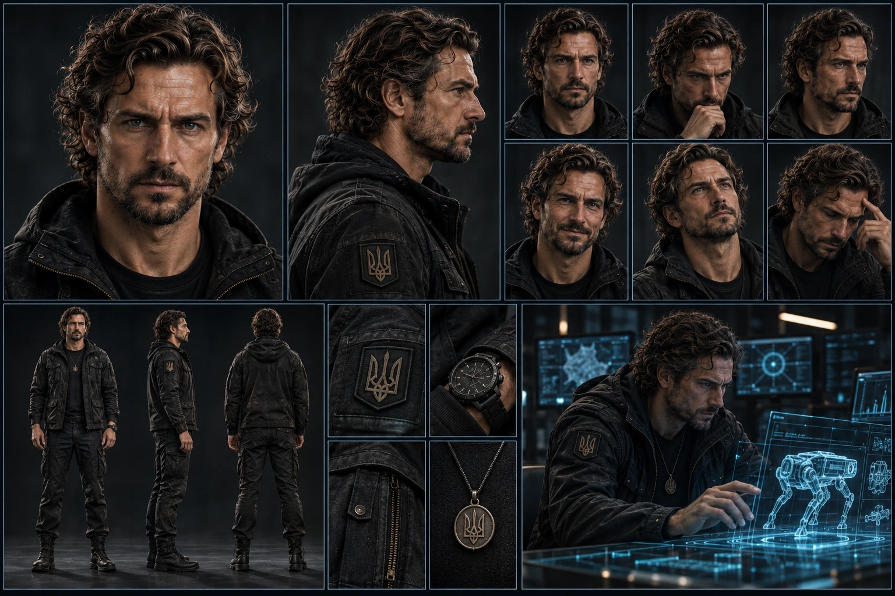

WORKING APPROACH
Systems thinking and practical results
Marko judges development by how it will perform in real conditions. He considers mass balance, power consumption, sensor coverage, maintainability, manufacturing limits and operator training. He is calm, attentive to detail and demanding about results, yet remains considerate: even after intense work, he reminds his team to rest and eat.
His principle is not to replace a fighter with an automaton, but to give people more information and better tools. Robots can scout dangerous areas, check passages, cover movement, assist with evacuation or perform engineering tasks. People set the goals and remain part of the system.
ROBOTIC PLATFORM DEVELOPMENT
From separate prototypes to a shared architecture
Working at the Zero Plan's orbital station, Marko reviews accumulated drone designs, selects successful solutions and combines them into a shared structural foundation. This leads to the R-10, a universal platform that can be adapted to different tasks by changing its equipment instead of designing a new robot each time.
The basic R-10 has a low, wide body, six articulated legs, two front side manipulators, sensor blocks and an operator's position. It can switch between walking and wheeled modes, assess surface strength, choose safe footholds and operate engineering equipment. During demonstrations, Marko shows how several machines exchange data and build a shared picture of their surroundings.
The architecture supports modular equipment: reconnaissance sensors, micro-drones, electronic reconnaissance systems, engineering modules and protective equipment. Marko stresses standardised components, repairability and scalable production. His team later develops the R-17 platform using the accumulated architecture.
HUMAN-MACHINE INTERACTION
One person, a shared view from several platforms
Marko develops an approach in which robots do not operate as isolated units. They exchange data in real time, distribute observation tasks and can continue autonomously if the connection is lost. Through a thought-link bracelet, a fighter receives sensor information and sets a direction or task while the system calculates the movement itself.
During an R-10 group test, a soldier sees the situation from several positions at once, checks a dangerous passage and leaves some observation tasks to the robots. Marko considers not only technical performance but also the operator's experience: the volume of information is initially overwhelming, so the system and training must help the person focus on what matters.
DEFENSIVE SYSTEMS
Finding a solution for prolonged combat
When conventional armour upgrades no longer solve the main problem, Marko contacts Noil about using a Zero Plan defensive technology. He considers it primarily for robots: their frames can carry the extra mass, and their own power and cooling systems simplify integration.
Marko, Noil and Rita discuss adapting the module to different bodies. He does not present a promising development as a finished combat system: movement tests, load testing and preparation for serial production are still required. His next idea is a mobile protected area that could cover a unit while it moves or during the most dangerous moments of combat.
REFERENCE DETAILS
Limits of confirmed canon
What the manuscripts confirm
- Marko leads and coordinates engineering development of robotic platforms.
- He works with Lech, Noil, Rita, engineers and military specialists.
- He develops autonomous operation, networked cooperation and thought-link control.
- He works on the R-10 and R-17 platforms and defensive-module integration.
- He sees robots as tools to support people, not replace them.
Details from the visual reference
Dark curly hair, a short beard, grey-blue eyes, dark tactical clothing and Ukrainian symbols on clothing and jewellery. These define the illustration and are not a separate physical description from the manuscripts.
What remains unknown
The three supplied manuscripts do not establish Marko's exact age, height, birthplace, family or personal history. They also do not confirm that he is a kharakternyk or has supernatural abilities.
Appearances in the books
Book two: development of a robot at the Zero Plan's orbital station. Book three: discussions with Noil about robot protection, the R-10 presentation and testing, development of a unified architecture and work on the R-17 platform. No separate Marko storyline was found in the first supplied book.